late afternoon / getting dark / time to go buy some chrysanthemum tea in China Town / can I come too?
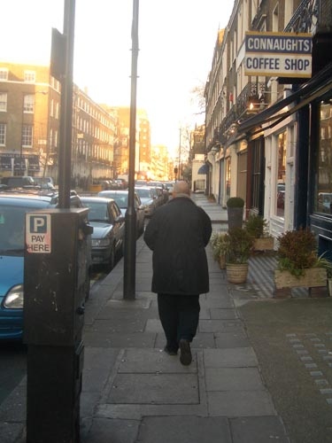
lightly down the grey pavement / Connaught Street / through Connaught Square / he-who-shall-not be-mentioned's house / across the raging traffic of the Bayswater Road / skip into old friend Hyde Park / chimneys of long defunct Battersea Power Station in the distance
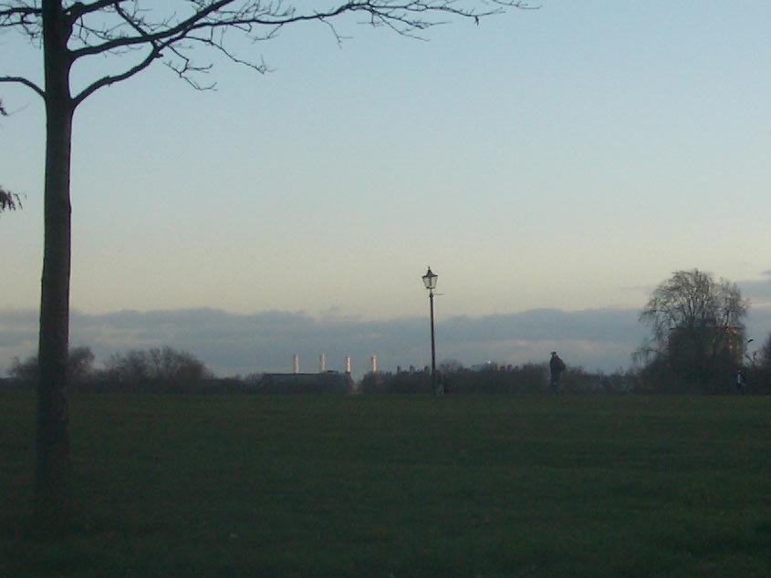
now we'll have to wedge our way through the weird tongue wagging mass at Speakers' Corner
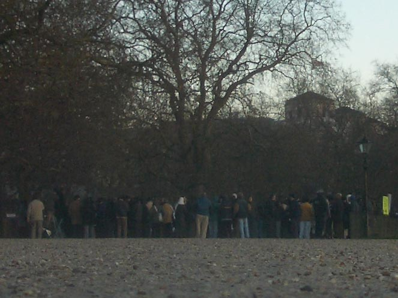
all high on religious book sickness / some rant / some listen / the usual symptoms
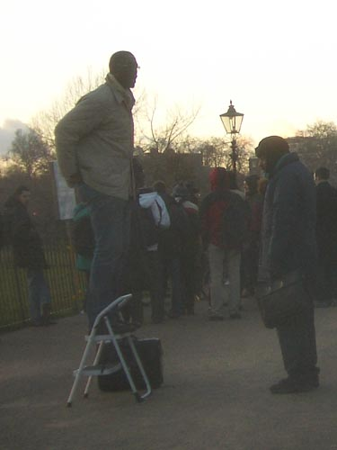
it was so clear today / thus the Sun glints its great way down among the ancient planes / they're 200 years I reckon / I counted rings once / on one that fell and got sliced
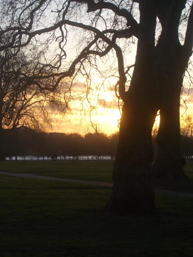
João loves to photograph clocks
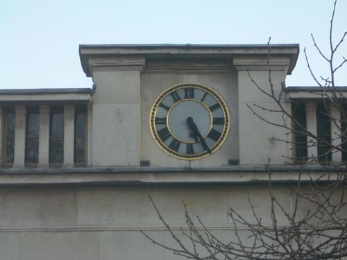
we're at Hyde Park Corner now / home of "Sparrow-hawks"
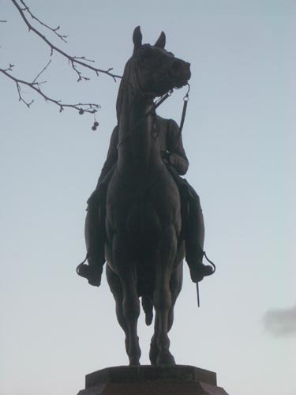
and the Machine Gunner's memorial / "best ass in London"
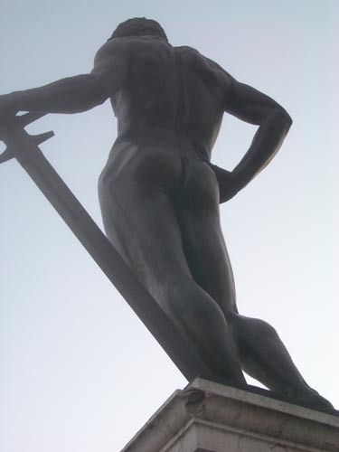
now we enter Green Park / and in keeping with an old tradition we leave the path and cross the brow of a half hidden magic hill / the guardians here are in a ring and try to keep their secrets / but an absence speaks
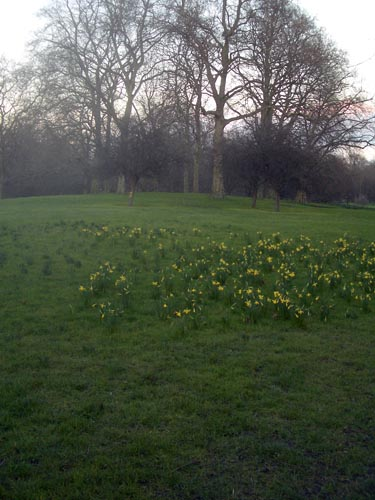
keeping to the grass and crossing paths / we squelch through a last muddy patch known as "The Tundra" / marveling at the city's majestic presence as we approach / that's the Ritz on the right
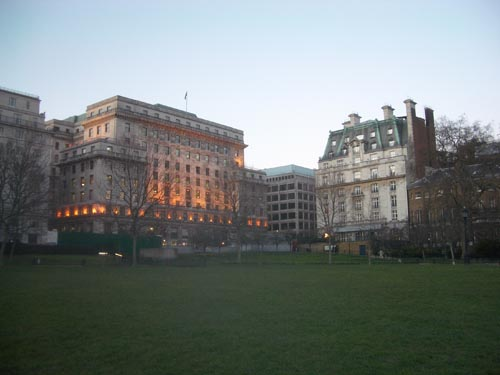
the Ritz and mighty Picadilly
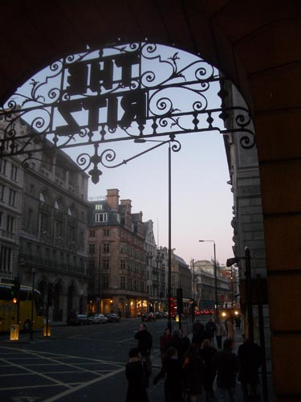
but I prefer the smaller Jermyn Street with its ladies boots
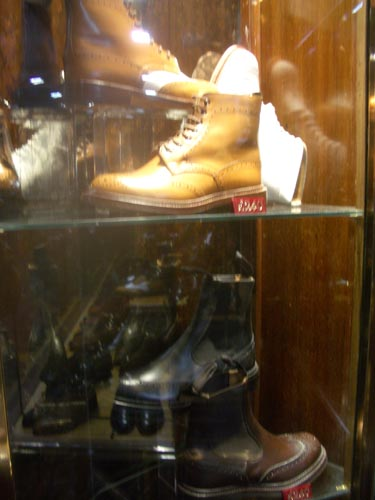
and gentlemen's attire

we skirt the bottom of Picadilly Circus / dazzling hub / weapon of mass tourism
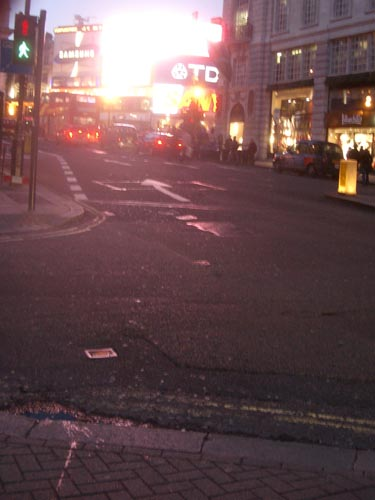
we're almost there / that's Mama Mia on the right
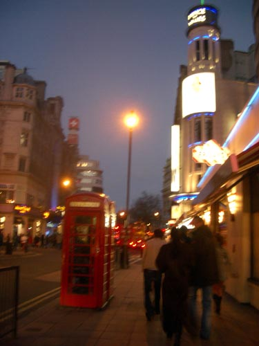
finally Lisle Street China Town / hope the shops don't close at 6
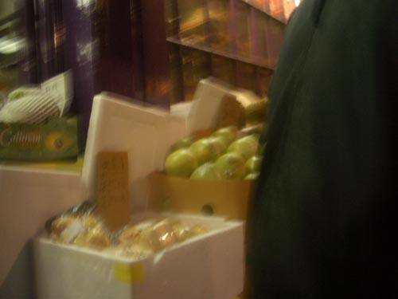
so what have they got? / there's this one / but I remember it's too sweet
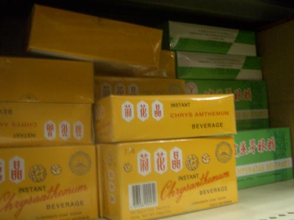
this one with honey seems the same
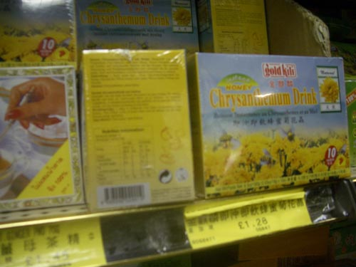
here we are / this is it / into the basket with you / let me introduce you to my kitchen shelf
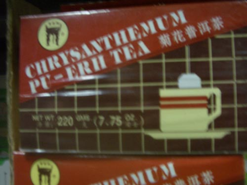
job done and laden up with other stuff / it's getting late / we have to get back / guests at eight / let's take the tube / up to Tottemham Court Road through Soho's busy life / look at those colours
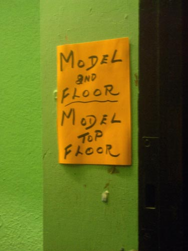
they still have those funny teapots at Gungwha / the shelves where I first found my Panda books
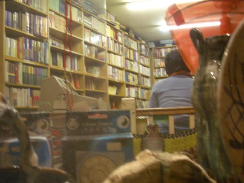
oh dark looming Centre Point
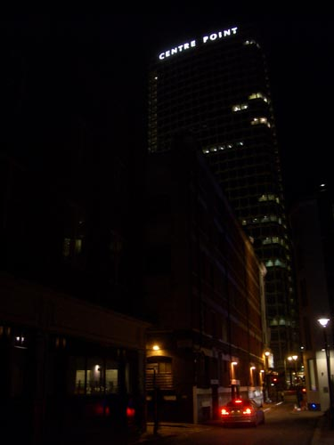
and we're out at Marble Arch / and home
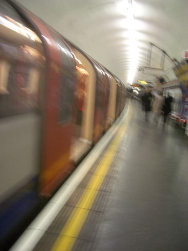
(now for some faggy tea)
- hermitstyle
2005-03-02 05:15
i prefer unsweetened chrysanthe mumtea- deathinvenice
2005-03-02 13:15
the one i bought is unsweetened
but really just pu-erh with a hint of chrysanthemum
i also bought something called ng fa char mix
chrysanths honeysuckle etc
probably some kind of hair tonic or bowel regulator
just tried it now
think i'll stick to peppermint
another glorious faggy brew
- deathinvenice